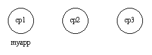
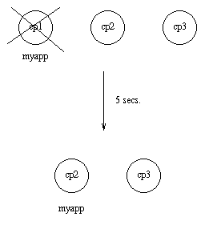
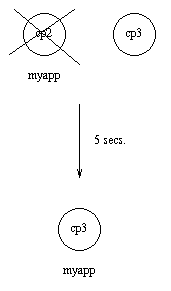
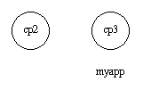
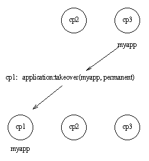

在一个包含了若干Erlang节点的分布式系统中，可能需要以分布的方法来控制应用。如果某个节点——上面运行了某个应用——挂了，应用要在另一个节点上被重启。
这样一个应用被称之为一个分布式应用。注意是对于应用的控制是分布的，所有应用当然都可以是分布——比如，使用其它节点上的服务。
因为一个分布式应用可能会在节点之间移动，所以必须有某种寻址机制来确保它可以被其他应用找到，无论它当前运行于哪个节点上。这里不会讨论这个问题，Kernel模块 global 和STDLIB模块 pg 都可以用于这个目的。
分布式应用同时由应用控制器和一个分布式应用控制进程 dist_ac 来控制。这些进程都是 kernel 应用的一部分。因此，分布式应用要通过配置 kernel 应用来指定，使用以下配置参数（参见 kernel(6) ）：
为了应用控制的分布能正常工作，分布式应用所运行的节点必须互相联系并商定在何处启动应用。这是使用以下 kernel 配置参数来完成的：
当启动之后，节点要等待所有由 sync_nodes_mandatory 和 sync_nodes_optional 指定的节点就绪。当所有节点就绪，或者当所有强制的节点就绪同时已经经过由 sync_nodes_timeout 指定的时间，然后所有的应用将被启动。如果不是所有的强制节点都就绪了，那么这个节点就会终止。
例如：一个应用 myapp 应该运行于节点 cp1@cave 上。如果该节点挂了，那么 myapp 应该在 cp2@cave 或者 cp3@cave 上重启。那么针对 cp1@cave 的一个系统配置文件应该为：
[{kernel,
[{distributed, [{myapp, 5000, [cp1@cave, {cp2@cave, cp3@cave}]}]},
{sync_nodes_mandatory, [cp2@cave, cp3@cave]},
{sync_nodes_timeout, 5000}
]
}
].
cp2@cave 和 cp3@cave 的系统配置文件是一样的，除了强制节点的列表，对于 cp2@cave 来说应该是 [cp1@cave, cp3@cave] ，对于 cp3@cave 来说应该是 [cp1@cave, cp2@cave] 。
当所有参与的（强制）节点启动后，就可以在所有这些节点上调用 application:start(Application) 来启动分布式应用。
当然也可以用启动脚本（参见 发布 ）自动启动应用。
应用会在第一个——由 distributed 配置参数指定的、已经启动并运行的——节点上启动。应用按正常的方式启动。也就是说，创建了应用主程序并调用了应用回调函数：
Module:start(normal, StartArgs).
例如：继续前一节的例子，三个节点都启动了，并指定了以下系统配置文件：
> erl -sname cp1 -config cp1
> erl -sname cp2 -config cp2
> erl -sname cp3 -config cp3
当所有的节点都起来并运行了，就可以启动 myapp 了。这是通过在所有三个节点上调用 application:start(myapp) 来完成的。然后，它被启动于 cp1 上，如下图所示。

类似地，应用必须通过在所有相关节点上调用 application:stop(Application) 来停止应用。
如果运行应用的节点挂了，应用会在指定的超时之后被重启，于由 distributed 配置参数指定的第一个启动且运行的节点。这个过程称之为故障转移(Failover)。
应用会以正常的方式在新节点上启动，也就是，通过应用主程序调用：
Module:start(normal, StartArgs)
注意特例：如果应用定义了 start_phases 键（参见 被包含的应用 ），那么应用要另外使用以下调用：
Module:start({failover, Node}, StartArgs)
其中 Node 是被终止的节点。
例子：如果 cp1 挂了，然后系统检查其他节点—— cp2 或 cp3 ——哪个运行的应用数最少，但还要等待5秒钟让 cp1 重启。如果 cp1 没有重启，同时 cp2 运行的应用比 cp3 少，那么 myapp 则会在 cp2 上重启。

假设现在 cp2 也挂了并在5秒内没有重启。那么现在 myapp 会在 cp3 上重启。

如果一个节点启动了，根据 distributed ，它有着比分布式应用当前所运行的节点更高的优先级，那么应用首先会在新的节点重启，并在老的节点停止。这个过程称之为接管。
这种情况是通过以下应用主程序调用来启动应用的：
Module:start({takeover, Node}, StartArgs)
其中 Node 是老节点。
例如：如果 myapp 目前运行在 cp3 ，现在如果 cp2 重启了，那么它不会重启 myapp ，因为节点 cp2 和 cp3 之间的次序是不确定的。

然而，如果 cp1 也重启了， 函数 application:takeover/2 会将 myapp 移动到 cp1 ，因为 cp1 对此应用的优先级比 cp3 要高。在这种情况下，会在 cp1 执行 Module:start({takeover, cp3@cave}, StartArgs) 来启动该应用。
